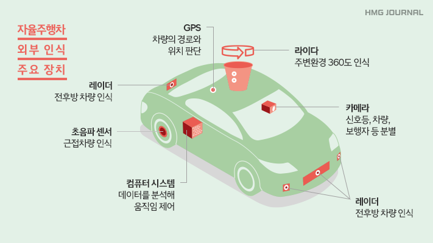
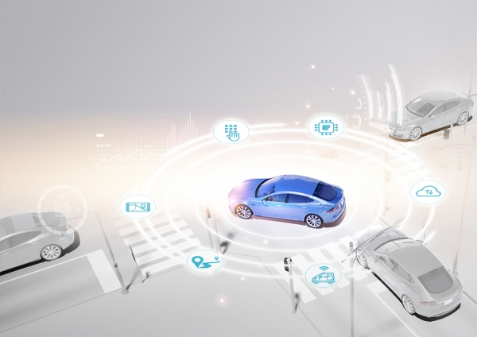

자율주행차는 기본적으로 도로 위의 사물의 유무를 판단하고 그것을 넘어 단순 장애물인지 사람인지까지 판단할 수
있어야 한다. 이것을 기본으로 주변 상황을 정확하게 판단하고 감지하여 어떻게 움직여야 하는지 판단해서 마치 사람
이 운전하는 것처럼 가속 페달 밟는 정도, 브레이크 페달을 밟는 정도, 핸들의 각도 등을 조절해 줘야 자율주행을 할
수 있다. 이렇게 자율주행 자동차가 주변 상황을 판단하기 위해서는 다양한 기술이 필요한데 여기서 필요한 기술에
인지, 판단, 제어, 측위 등이 있다.
  출처 : HYUNDAI HMG JOURNAL
측위는 인지-판단-제어를 수행하기 위한 가장 기본적인 정보로, GPS와 같은 기술들을 활용하여 차가 도로 어디에
있는지 알아내는 기술이다. 측위를 수행하기 위해 자율주행차에는 외부 인식 장치가 있다. 외부 인식 장치에는
GPS, 레이더, 라이다, 카메라, 초음파 센서, 컴퓨터 시스템이 있다. GPS는 차량의 경로와 위치를 판단하고, 레이더는
전후방의 차량을 인식하며, 라이다는 자동차의 주변 환경을 360도로 인식한다. 또, 카메라는 차량 앞에 있는 사물이
어떤 사물인지, 혹은 사람인지 아닌지 파악하고, 초음파 센서는 차량 주변에 있는 근접 차량을 인식한다. 마지막으로
컴퓨터 시스템은 외부 인식 장치를 통한 데이터를 분석해 자동차의 움직임을 제어해 주는 역할을 한다.
인지는 각종 센서를 이용하여 차선 및 차량에 관한 정보를 인지한다. 카메라, 레이더, 라이다 등 정밀 센서를 이용해
주행 경로 탐색, 장애물, 이동 물체등 차량 주변 상황을 인식하여 주행한다. 판단 및 제어는 인지 단계에서 다양한
센서를 기반으로한 데이터를 분석해 어디로 어떻게 가야하는지, 어디서 어떻게 멈춰야 하는지, 인지된 상황에 따른
행위를 판단하고 결정하는 기술이다. 카메라를 활용한 차선 유지 보조시스템, 교통표지판 인지 시스템, 보행자
회피시스템 등의 판단기능을 수행한다. 특히 도심지에서 보행자, 신호등, 돌발 상황 등에 대처하는 복합적 판단이
요구된다. 이를 수행하기 위해 FCW(전방충돌 경고), UWS(근거리 물체 경고), SOWS(차선변경 경고), DWS(졸음운전
방지), LDW(차선이탈 경고), AEB(자동 비상 제동), 등의 기술들이 사용되고 있다.이처럼 자율주행 자동차는 정말 많은
기술들이 복합적으로 상호작용하여서 마치 사람이 운전하는 것과 같거나 그 이상의 기능을 해내는 기술을 품고 있는
자동차이다.